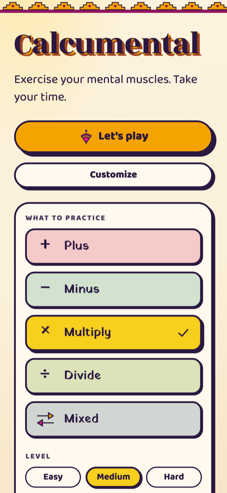
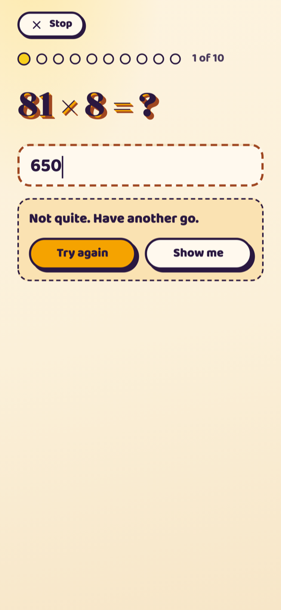
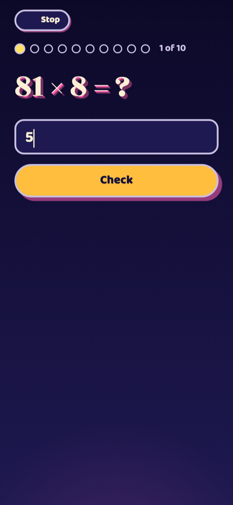

Why Calcumental
Calcumental was made for a young girl in Mexico who loved numbers and wanted more arithmetic to practise.
So the idea of the app was born. It asks one question at a time, waits as long as you like, and does not judge how you did.
Exercise your mental muscles.
Four operations, three levels, three languages. Practise anywhere, even offline.
Free and open source. In English, Español and हिन्दी.

This is a screenshot of the app.
Try the real thing online.
Calcumental was made for a young girl in Mexico who loved numbers and wanted more arithmetic to practise.
So the idea of the app was born. It asks one question at a time, waits as long as you like, and does not judge how you did.
Four operations, three levels, and a few small kindnesses that make mental arithmetic easier.
Plus, minus, multiply, divide, or mixed mode, which mixes them all together.
From single-digit tables to three-digit sums. Practise exactly what you want.
Turn on “close enough” to practise estimating: an answer within 5% counts.
Start typing a new answer straight away, press Try again, or choose Show me. There is no penalty.
Everything runs on your device. No network requests, no analytics, no ads and no accounts.
Calm by design: no streaks, scores, timers or red marks. Read about Ahimsa.
Built on the Khelo design system: warm paper, ink outlines, big friendly buttons and block lettering.




Press Let’s play, or Customize to choose the operation, level and how many problems.
Type your answer and press Check. If it’s not quite right, have another go.
Nothing is timed or scored. When the set ends, you see what you did, and you can start another.
Notes
No. There are no accounts, no analytics and no ads, and the app makes no network requests. It remembers only your choices (language, look, what to practise), on your own device. Read the privacy policy.
Calcumental is for practising without pressure. It never times you, ranks you or tells you how you compare, so the only person you’re working with is you.
Yes. Everything runs on your device, and it needs no connection at all.
It’s a way to practise estimating. Instead of needing the exact answer, anything within 5% of it counts (never less than 1 away).
Yes, under the AGPL-3.0-or-later. The code is on GitHub. Its fonts are under the SIL Open Font License.
Calcumental is free and open source, and Google Play asks new personal developer accounts to run a closed test with at least 12 testers for 14 days before an app can be published. That is a lot of overhead and too taxing for me to do for every release, so the Android version is a direct download instead. It is the same app, and the code is open for anyone to check.
Verifying is optional. Either check shows the file is the one published, and doing both is best. Google explains how Android signs apps.
Check the file
Calcumental.apk from the latest release.shasum -a 256 Calcumental.apk. On Windows, run certutil -hashfile Calcumental.apk SHA256.Check who signed it
apksigner verify --print-certs Calcumental.apk.1778ce35141d6c39bb23285e2a4ee854586fd4a5f107bb589209f7bc750757b1.If anything doesn’t match, don’t install it.